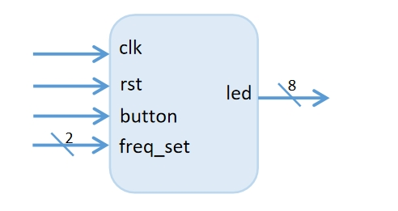
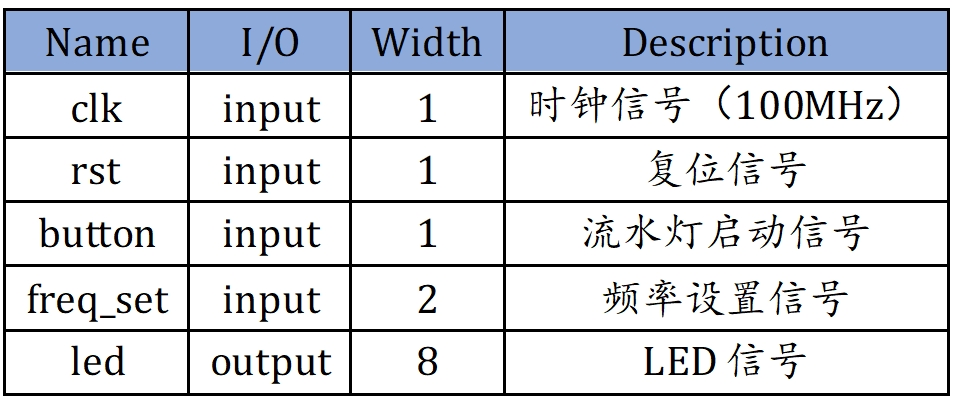
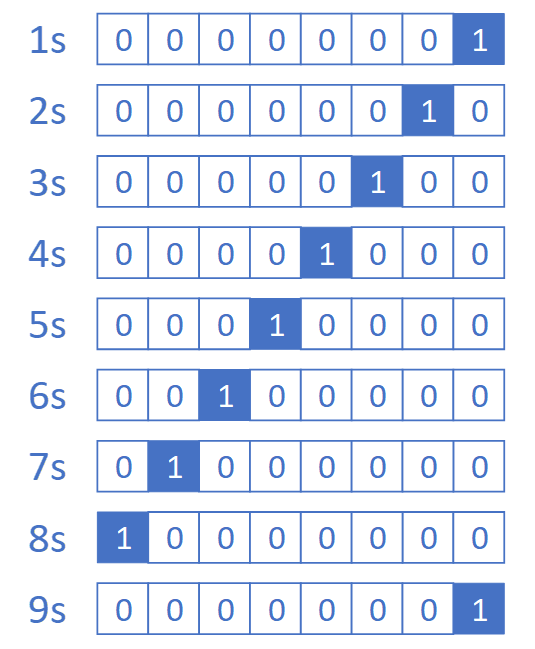
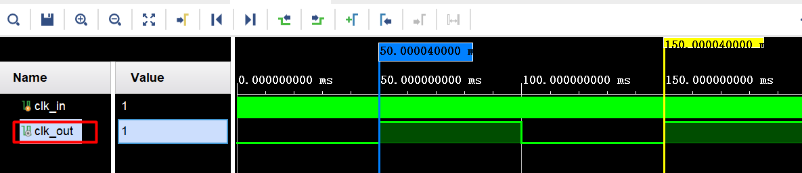

实验内容
1、实验目的¶
（1）熟悉时序电路的开发与调试；
（2）掌握计数器电路的设计方法及计数器架构时序电路的应用。
2、实验内容¶
基于计数器，实现时间间隔可调的的8bits循环左移流水灯
详细要求如下：
-
A. 使用按键开关K4(L1)作为异步复位信号：当K4为1时，流水灯复位，只亮LED1
-
B. 输入时钟为100MHz，端口为P17
-
C. 使用按键开关K5(N1)作为流水灯启动信号：复位后，第一次按下K5流水灯开始工作，再次按K5停止工作，K5作为启停的开关。
-
D. 流水灯输出信号需连接到开发板的 LED0~8
-
E. 拨码开关SW9(T3)-SW10(T4)控制，间隔可在0.01s、0.1s、0.25s、1s切换，间隔周期必须精确，无需支持动态切换
流水灯必须用LED1~8，开关必须用K4，K5，SW9-SW10，其他未注明的要求可自行决定。
接口定义


3、 实验原理¶
3.1 流水灯实现¶
首先需要生成时间间隔为T的流水灯切换控制信号，且间隔T由输入控制。有了时间间隔为T的流水灯切换控制信号后，还需要生成每次切换所需要的流水灯显示信号。

根据上图的流水灯显示示意图，可以发现，每隔时间T，显示位向左移动1位。故只需要实现间隔为T的移位功能即可。
注意
不要将计数器分频后的信号作为时钟驱动其他模块，而应作为控制信号。分频信号作为新的时钟 会使得整个电路有多个时钟，属异步电路，是很不好的习惯。
3.2 仿真¶
从100MHz分频到1Hz的分频系数太大，仿真时间比较长，为减少仿真运行时间，进行仿真时，可调整计数器的判断条件，将1Hz对应的计数边界值缩小为1000 0000 倍，其他频率的边界值可自行调整为合适值。
仿真按以下顺序实现：复位、启动、暂停、间隔切换，间隔切换只需要体现一次频率切换。
若默认的仿真时间不够，参考仿真调试常用功能：延长仿真时间。
实验要求流水灯的间隔严格按照精度要求，在仿真中要进行信号周期测量。
以分频器为例，用仿真视图上方的时钟沿工具（transition）选中输出时钟clk_out的两个相邻的上升沿，注意先用鼠标选中clk_out信号，再用工具进行标示。请注意时间的小数位。

3.3 计数器Verilog实现¶
计数器Verilog实现模板
logic [3:0] cnt;
logic cnt_end = ; // 结束条件
logic cnt_inc = ; // 累加条件
always_ff @ (posedge clk or negedge rst_n) begin
if(~rst_n) cnt <= 4'h0; // 复位后计数器清零
else if(cnt_end) cnt <= 4'h0; // 计数结束后计数器清零
else if(cnt_inc) cnt <= cnt + 4'h1; // 累加条件满足时，计数器累加
end
计数器Verilog实现示例，4bit计数器。
module counter(
input clk,
input rst,
input button
);
logic [3:0] cnt;
logic cnt_inc;
logic rst_n = ~rst;
logic cnt_end = cnt_inc & (cnt==4'h9);
always_ff @ (posedge clk or negedge rst_n) begin
if(~rst_n) cnt_inc <= 1'b0;
else if(button) cnt_inc <= 1'b1;
else if(cnt_end) cnt_inc <= 1'b0;
end
always_ff @ (posedge clk or negedge rst_n) begin
if(~rst_n) cnt <= 4'h0;
else if(cnt_end) cnt <= 4'h0;
else if(cnt_inc) cnt <= cnt + 4'h1;
end
3.4 按键启停¶
同一个按键开关既能启动，又能暂停，则不仅要判断按键是否按下，还要记录按键按下代表的状态。
不能将button信号作为上升沿触发的敏感信号，下面这种写法是很不规范的写法，敏感信号列表中的边沿触发除了时钟只能是全局复位信号。
always_ff @(posedge button)
begin
end
那需要怎么实现信号的边沿判断？通常是将信号打两拍，判断前后值是否相同来判断是否有边沿，示例代码如下。再根据按键按下的次数可比较容易判断当前的状态。
logic pos_edge;
logic sig_r0, sig_r1;
always_ff @(posedge clk)
begin
if(rst) sig_r0 <= 1'b0;
else sig_r0 <= signal;
end
always_ff @(posedge clk)
begin
if(rst) sig_r1 <= 1'b0;
else sig_f1 <= sig_r0;
end
assign pos_edge = ~sig_r1 & sig_r0;
也可以使用其他方式实现按键启停。
4、实验步骤¶
- 创建工程，工程名为flowing_water_lights；
- 编写并添加设计文件flowing_water_lights.v；
- 编写并添加仿真文件testbench.v，并完成仿真；
- 编写并添加约束文件，并综合实现，生成比特流；
- 将生成的比特流下载到开发板验证
5、验收要求¶
课上验收
- 流水灯开发板验证通过（1分）
课后提交
- 流水灯仿真波形分析、代码、RTL Analysis和Synthesis schematic截图（1分）
- 课后作业的RTL Analysis和Synthesis schematic截图、仿真截图、整体的分析说明（0.5分）
仿真按以下顺序实现：复位、启动、暂停、间隔切换，波形分析要有计数器输出信号的周期测量截图。